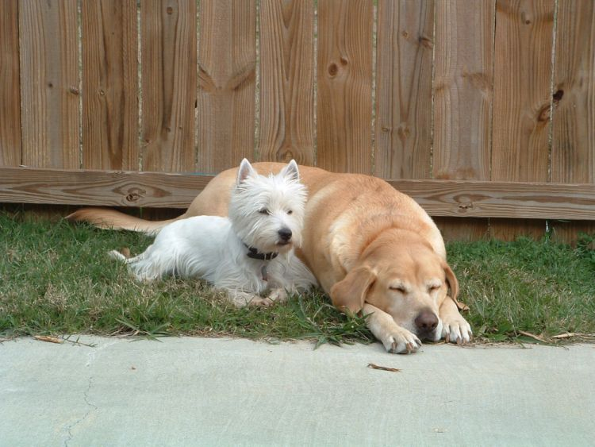

Hunden har 20 gånger fler luktreceptorer än människan Luktreceptorer är de små sinnesceller som finns i nosen/näsan. Varje luktreceptor reagerar på ett specifikt ämne och gör att vi kan urskilja olika dofter. Hunden har över 200 miljoner luktreceptorer mot oss människor som har mellan 5 och 10 miljoner.
Hunden brukar kallas människans bästa vän och det är inte så konstigt. Våra fyrbenta vänner har vandrat vid vår sida cirka 12 000 år. Det har gjorts studier som visar på att äga hund är bra för hälsan och hunden ger människan väldigt mycket glädje.  Funderar du på att skaffa hund och undrar vilken ras som passar dig?
Här kommer två exempel på familjevänligahundar..